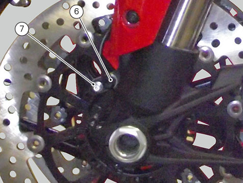

Removal of the front mudguard
Loosen the two screws (1) and remove the pipe grommet (2).
Loosen and remove screws (3), and collect relevant nylon washers (4).
Undo the screw (7) and remove ABS sensor (6).

Undo the two screws (9) and remove accelerometer (11) mounting bracket (10).
Remove tie (12) and release cables from slots (8), from mudguard (5).
If accelerometer (11) must be replaced, remove the two screws (12).
The US versions are equipped with a cat's eye on the front mudguard (5).